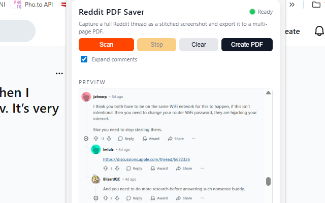
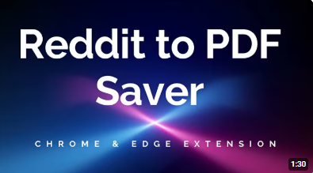

Reddit to PDF Saver
Reddit to PDF Saver is a Chrome/Edge extension that lets you save any Reddit thread as a clean, printable PDF — with comments expanded, layout preserved, and without capturing the browser chrome or page clutter. Instead of using the built–in browser print dialog (which often cuts content or includes menus, ads, and sidebars), the extension automatically scrolls the thread, loads additional comments, stitches everything into a long, high–quality screenshot and then exports it as a multi–page PDF.
The extension works directly on the live Reddit page you are viewing (new Reddit layout). When you click Scan in the popup, it reloads the thread to ensure a clean state, aligns the conversation area under the header, then scrolls down step by step. During this process it can click “View more comments” blocks and, if you want, expand additional nested replies. At each step it captures the visible portion of the thread, crops out the fixed header and irrelevant UI, and later combines all segments into one continuous thread image.
Under the hood, Reddit to PDF Saver is optimized to avoid glitches: it uses Chrome’s native captureVisibleTab API to grab crisp PNG screenshots, detects when the same viewport is captured twice to stop scanning automatically, and limits capture speed to respect browser quotas. The extension then compresses all captured segments into a vertically stitched image at a controlled width, and from that image generates a properly paginated PDF where the thread flows naturally across multiple pages with margins.
The popup includes a live Preview area where you can see the stitched thread screenshot once the scan is done. You can scroll this preview to verify that the conversation starts at the top and ends at the bottom (no missing lines), before clicking Create PDF. You can also interrupt a scan at any time using the Stop button, or clear the last stored preview with Clear. A small animated green dot in the popup header shows that the extension is ready and active on the current Reddit tab.
✨ Key Features & Benefits
- Automatic full-thread capture: scrolls the Reddit thread for you and captures it in multiple steps, from the top of the post to the last visible comment.
- “View more comments” support: automatically clicks the primary View more comments blocks so that additional comments at the bottom are included in your export.
- Optional nested expansion: with the Expand comments checkbox you can ask the extension to also trigger deeper “more replies” loaders (based on Reddit’s
startingDepthAPI pattern). - Thread-only capture: focuses on the main content area (the post and its comments), avoiding browser UI, sidebars and unrelated sections.
- Header cropping: automatically removes the sticky Reddit header and top navigation from screenshots, so the PDF looks like a clean document, not a browser snapshot.
- Smart stop on duplicate views: if the extension detects that the same viewport is being captured repeatedly (end of thread or no new content), it stops scanning and avoids useless extra pages.
- Multi-page PDF generation: the final stitched thread image is split into multiple A4 pages with lateral margins, so the PDF is easy to read, annotate and print.
- Live preview in popup: once scanning is complete, a scrollable preview shows exactly what will be exported, so you have full control before saving the PDF.
- Start/Stop/Clear controls: quickly start a new scan, cancel an ongoing one, or clear the last stored preview without leaving the current Reddit tab.
- Persistent settings: the extension remembers your PRO unlock status, expand-comments preference and last preview between sessions using Chrome storage.
In Free mode, Reddit to PDF Saver adds a diagonal “WATERMARK DEMO” text on every PDF page to indicate that it is a demo export. Inside the popup you can enter an unlock code (for example after purchase) to enable PRO mode: this immediately removes the watermark from future exports, while keeping all existing functionality. The unlock field and status are stored locally, so you don’t have to re–enter the code every time you open the browser.
🧭 How It Works
- Install Reddit to PDF Saver from the Chrome Web Store.
- Open any Reddit post (thread) in your browser using the standard Reddit interface.
- Click the extension icon in the browser toolbar to open the popup.
- (Optional) Make sure the Expand comments checkbox is enabled if you want nested replies to be expanded while scanning.
- Click Scan: the extension reloads the tab for a clean state, aligns the thread, and then scrolls down automatically while capturing multiple screenshots.
- During scanning, the status text and a blinking “Scanning… please wait” label show that the process is in progress; you can click Stop at any time to cancel further scrolling.
- When scanning finishes, a full-thread preview image appears in the Preview box inside the popup; you can scroll this preview to inspect the captured conversation.
- Click Create PDF to generate a multi-page PDF from the stitched screenshot. The extension automatically splits it across pages and adds margins.
- Chrome/Edge will ask you where to save the PDF (or save it under your default Downloads folder); you can then open it in any PDF viewer, share it, or archive it.
📷 Screenshots


🔒 Permissions & Technical Notes
Reddit to PDF Saver runs entirely inside your browser. It does not send your threads, screenshots or PDFs to any external server. All processing (scrolling, capturing, stitching and PDF generation) is done locally in the extension context. To work correctly, the extension requests a small set of permissions:
- activeTab: to interact with the current Reddit tab when you click the extension icon.
- tabs: to reload the active Reddit tab, control scrolling, and know when the page has finished loading before capturing.
- downloads: to save the generated PDF to your computer using the built–in browser download dialog.
- storage: to remember your settings (such as Expand comments), PRO unlock status, and the last captured preview image.
The extension does not bypass Reddit private subreddits, deleted comments, or any form of access restriction. It only captures the content you can already see in your browser. If a comment is collapsed, removed, or restricted, the PDF will reflect exactly what Reddit displays. The goal of Reddit to PDF Saver is to help you archive, read and share existing discussions more comfortably, not to circumvent Reddit’s rules or paywalls.
View Reddit to PDF Saver on Chrome Web Store